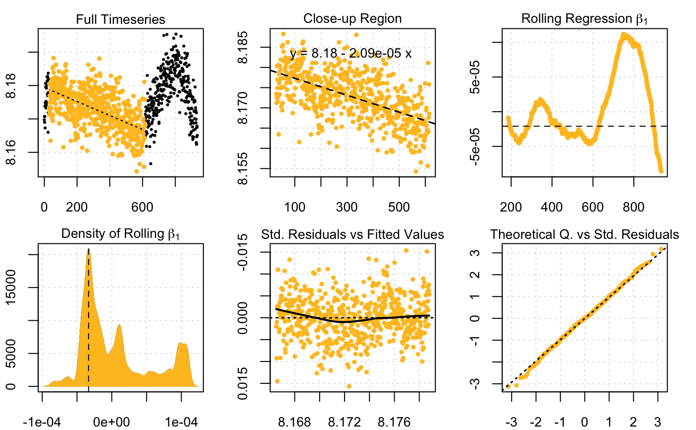
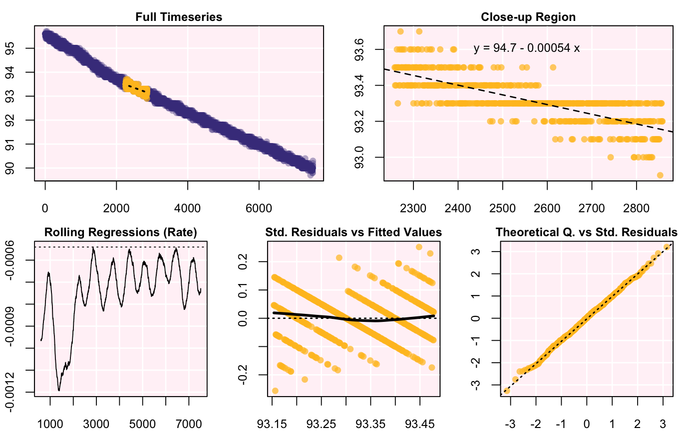
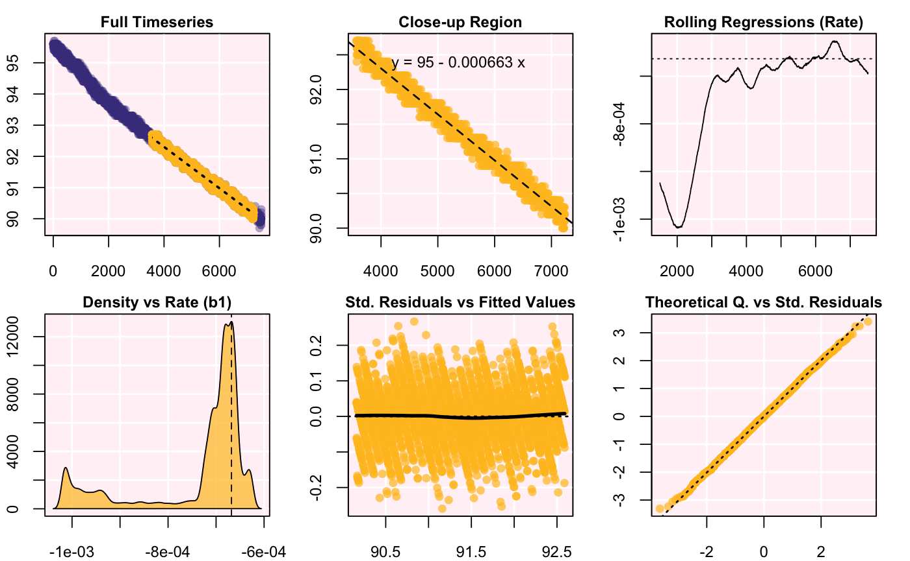

auto_rate automatically performs a rolling regression on a data frame to
determine maximum, minimum, interval or "best fit" linear rate of change in
oxygen concentration over time. First, a rolling regression of specified
width is performed on the entire dataset to obtain all possible values. The
computations are then ranked (or, arranged), based on the "logic" argument,
and the output is summarised.
auto_rate(df, width = NULL, by = "row", method = "linear", plot = TRUE, parallel = FALSE)
| df | data frame, or object of class |
|---|---|
| width | numeric. Width of the rolling regression. Defaults to `floor(0.2
|
| by | string. |
| method | string. |
| plot | logical. Defaults to TRUE. Plot the results. |
| parallel | logical. Defaults to TRUE. Should parallel processing be used? |
A list object of class auto_rate.
Units
There are no units of measurement involved in auto_rate. This is a
deliberate decision. Units are called in a later function when volumetric
and/or mass-specific rates of oxygen use are computed in convert_rate() and
convert_DO().
Ranking algorithms
At present, auto_rate() contains four ranking algorithms that can be called
with the argument method:
"linear": Uses kernel density estimation (KDE) to detect the most
"linear" sections of the timeseries. This is achieved by using the smoothing
bandwidth of the KDE to re-sample the "peaks" in the KDE to determine linear
regions in the data.
"max": regressions are arranged from highest values, to the lowest.
"min": regressions are arranged from lowest values, to the highest.
"interval": non-overlapping regressions are extracted from the rolled
regrssions. They are not ranked.
# most linear section of the entire data auto_rate(sardine.rd, parallel = FALSE)#>#> Data is subset by row using width of 1502 #> Rates were computed using 'linear' method #> 46 linear regions detected in the kernel density estimate #> #> === Rank 1 of 46 === #> Rate: -0.0006290986 #> R.sq: 0.926 #> Rows: 5047 to 6569 #> Time: 5046 to 6568# what is the lowest rate over a 10 minute (600s) period? auto_rate(sardine.rd, method = "min", width = 600, by = "time", parallel = FALSE)#> Data is subset by time using width of 600 #> Rates were computed using 'min' method #> #> === Rank 1 of 6913 === #> Rate: -0.0005403066 #> R.sq: 0.5867958 #> Rows: 2259 to 2859 #> Time: 2258 to 2858# what is the highest rate over a 10 minute (600s) period? auto_rate(sardine.rd, method = "max", width = 600, by = "time", parallel = FALSE)#> Data is subset by time using width of 600 #> Rates were computed using 'max' method #> #> === Rank 1 of 6913 === #> Rate: -0.001193863 #> R.sq: 0.8595803 #> Rows: 791 to 1391 #> Time: 790 to 1390